Zanone collar


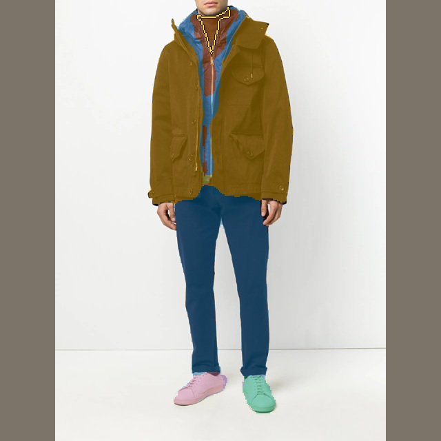
Starting head IoU: 0.233 · Parent · 4,000 (≥0.35) IoU: 0.000 · Control · +2,000 (≥0.50) IoU: 0.259 · With auxiliary data · +2,000 (≥0.50) IoU: 0.272 · Selected checkpoint IoU: 0.236
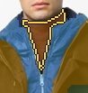


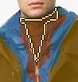
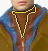
Training complete — validation gates passed
Updated 2026-09-27 03:39 UTC · hard GPU stop Sep 26, 08:56 PM PDT. 18,511 main training images + 1,024 auxiliary images / 490 validation images. Named cases remain held out. Automatic SAM3-derived supervision; no human annotations.
The parent correction model improved overall partitions and preserved 650 already-correct validation regions, but still failed the named collar and barely improved the tanks. Both continuation arms start from its same 4,000-update checkpoint, with identical optimizer settings and 2,000 additional updates.
Control: more main-store examples. Auxiliary-data arm: 40% sliver/small-garment examples with freshly generated SAM3 masks, 60% main-store examples. The auxiliary images were fixed in advance and exclude held-out source and partner SKUs. Old auxiliary mask annotations are ignored. This remains the same DETR-style correction model; only training data differs.
Running on RTX 5090: H200 had only 2 MiB free and failed before any optimizer update. Microbatch 4 × 3 accumulation = effective batch 12; original deadline retained.
Promotion: none. Quality-pass status is true; checkpoint selection uses validation only. Named cases are for inspection.
Selected head on NVIDIA GeForce RTX 5090: median 9.82 ms, p95 10.93 ms. Cached GPU C-RADIO tokens + RGB to CPU 640px labels. Encoder time is excluded; this is not an end-to-end latency claim.
Expanded preservation check: 650 previously correct regions, mean IoU 0.912 → 0.912; 2 fell below 0.50 IoU. Within one percentage point: True.
Paired image PQ change: +0.074; 95% image-bootstrap interval [+0.064, +0.085]. References are automatic teacher masks.
Complete pipeline on the same images: student 35.0 ms median / 36.3 ms p95; SAM3 91.4 ms median / 100.6 ms p95. Median speedup 2.61×. Both start with a 640px PIL image and return CPU640 labels; image encoding and postprocessing are included. SAM3 uses a shared vision pass and four batched prompts with cached text features. Speed improvement does not establish equal segmentation quality.
Named hard cases: the selected checkpoint reaches 0.50 teacher-region IoU on 2 of 4. Passing aggregate validation gates does not mean every hard garment is fixed, and this is not SAM3 quality parity.
| Model | PQ ↑ | FG IoU ↑ | Hard recall ↑ | Small easy IoU ↑ | Splits ↓ | Merges ↓ | False seam fraction ↓ | Same-piece agreement ↑ | Cross-piece collision ↓ |
|---|---|---|---|---|---|---|---|---|---|
| Starting head | 0.368 | 0.741 | 0.000 | 0.862 | 1.298 | 1.404 | 0.392 | 0.640 | 0.219 |
| Parent correction model | 0.439 | 0.795 | 0.068 | 0.878 | 1.233 | 1.263 | 0.313 | 0.732 | 0.202 |
| control · +2,000 · confidence ≥ 0.15 | 0.398 | 0.729 | 0.112 | 0.744 | 1.749 | 1.343 | 0.318 | 0.733 | 0.174 |
| control · +2,000 · confidence ≥ 0.25 | 0.422 | 0.778 | 0.124 | 0.811 | 1.543 | 1.288 | 0.310 | 0.725 | 0.178 |
| control · +2,000 · confidence ≥ 0.35 | 0.436 | 0.793 | 0.112 | 0.849 | 1.414 | 1.271 | 0.304 | 0.724 | 0.189 |
| control · +2,000 · confidence ≥ 0.50 | 0.444 | 0.800 | 0.080 | 0.849 | 1.214 | 1.261 | 0.304 | 0.723 | 0.206 |
| control · +2,000 · confidence ≥ 0.65 | 0.437 | 0.801 | 0.048 | 0.876 | 1.165 | 1.247 | 0.311 | 0.707 | 0.209 |
| aux · +2,000 · confidence ≥ 0.15 | 0.388 | 0.758 | 0.147 | 0.828 | 1.835 | 1.345 | 0.340 | 0.715 | 0.173 |
| aux · +2,000 · confidence ≥ 0.25 | 0.412 | 0.792 | 0.139 | 0.832 | 1.661 | 1.333 | 0.333 | 0.714 | 0.180 |
| aux · +2,000 · confidence ≥ 0.35 | 0.431 | 0.805 | 0.120 | 0.845 | 1.490 | 1.280 | 0.327 | 0.717 | 0.184 |
| aux · +2,000 · confidence ≥ 0.50 | 0.441 | 0.811 | 0.080 | 0.856 | 1.294 | 1.235 | 0.323 | 0.714 | 0.203 |
| aux · +2,000 · confidence ≥ 0.65 | 0.435 | 0.801 | 0.048 | 0.847 | 1.198 | 1.255 | 0.329 | 0.702 | 0.211 |
| Selected · 5,000 updates | 0.443 | 0.801 | 0.100 | 0.862 | 1.306 | 1.273 | 0.304 | 0.721 | 0.195 |
Colors align by one-to-one matching to the reference. Gold outlines identify the requested piece. These images are held out from training and checkpoint selection.

Starting head IoU: 0.233 · Parent · 4,000 (≥0.35) IoU: 0.000 · Control · +2,000 (≥0.50) IoU: 0.259 · With auxiliary data · +2,000 (≥0.50) IoU: 0.272 · Selected checkpoint IoU: 0.236



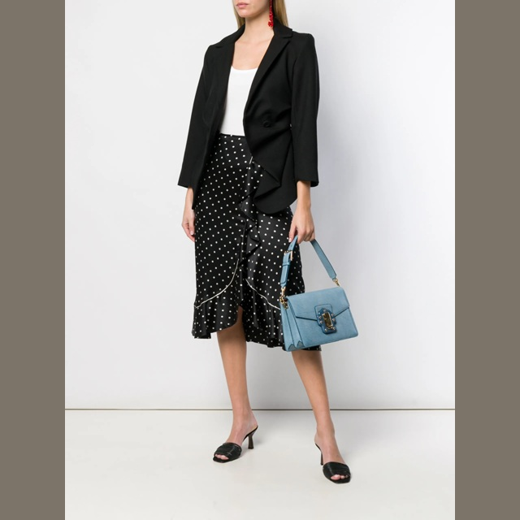


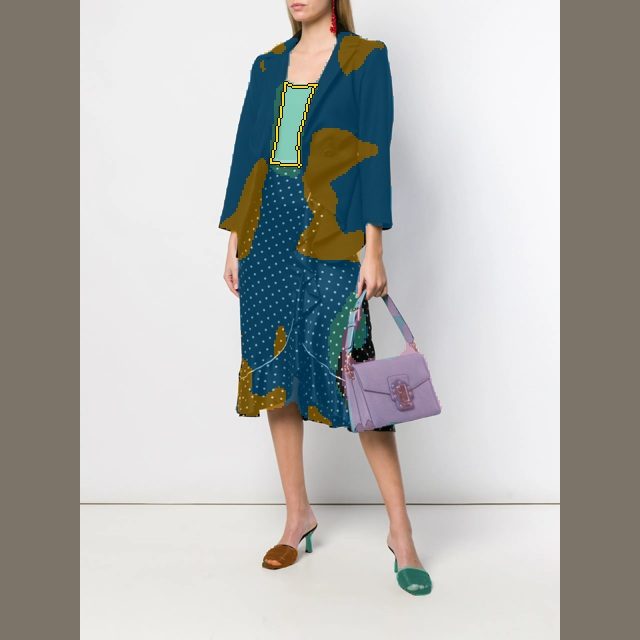
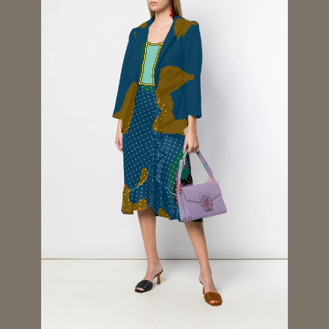
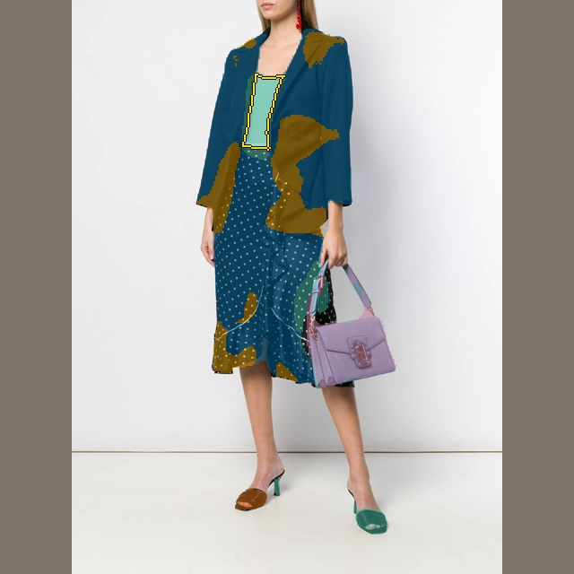
Starting head IoU: 0.489 · Parent · 4,000 (≥0.35) IoU: 0.496 · Control · +2,000 (≥0.50) IoU: 0.500 · With auxiliary data · +2,000 (≥0.50) IoU: 0.755 · Selected checkpoint IoU: 0.785
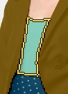

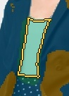
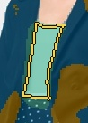
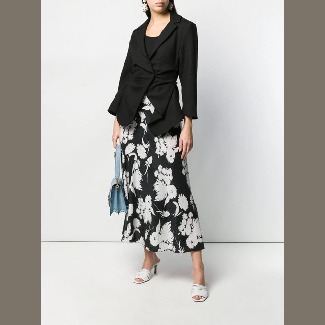


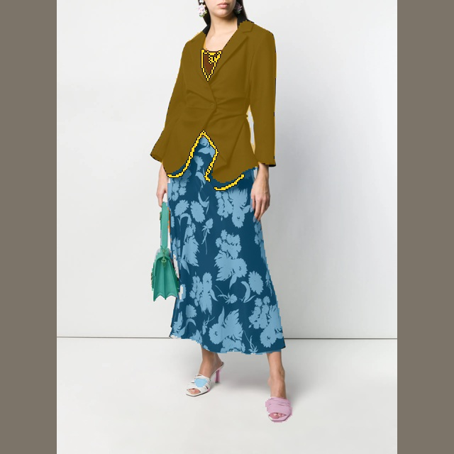
Starting head IoU: 0.282 · Parent · 4,000 (≥0.35) IoU: 0.299 · Control · +2,000 (≥0.50) IoU: 0.299 · With auxiliary data · +2,000 (≥0.50) IoU: 0.299 · Selected checkpoint IoU: 0.296

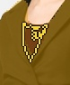


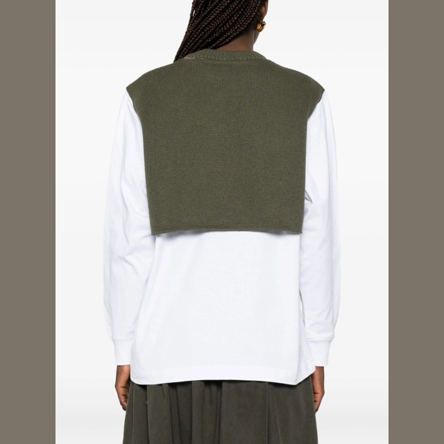


Starting head IoU: 0.553 · Parent · 4,000 (≥0.35) IoU: 0.553 · Control · +2,000 (≥0.50) IoU: 0.553 · With auxiliary data · +2,000 (≥0.50) IoU: 0.553 · Selected checkpoint IoU: 0.553


Automatically selected: three largest increases and three largest decreases in mean clothing-region IoU. This is an inspection gallery, not the overall result. All 490 validation images count in the table above. Gold outlines mark the clothing region with the largest relevant change in each image.
Mean clothing IoU change +0.786. Highlighted region: 0.003 → 0.788.
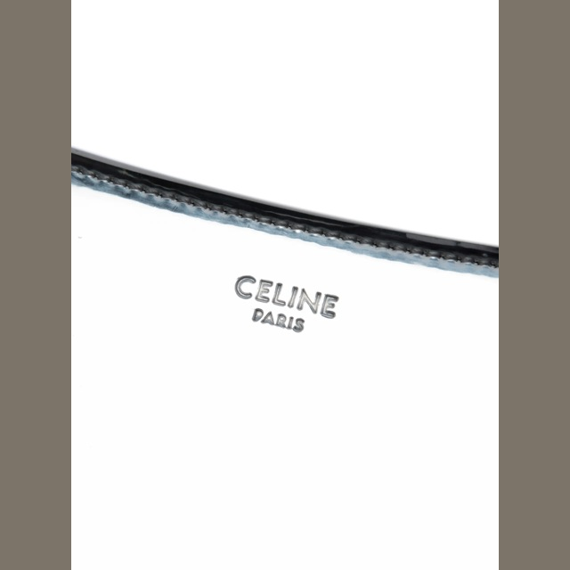
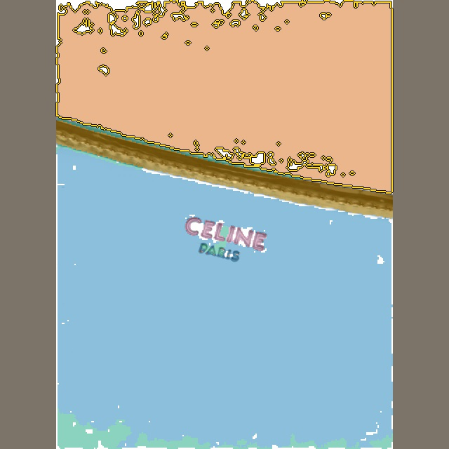
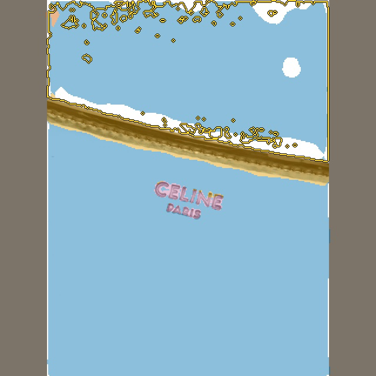
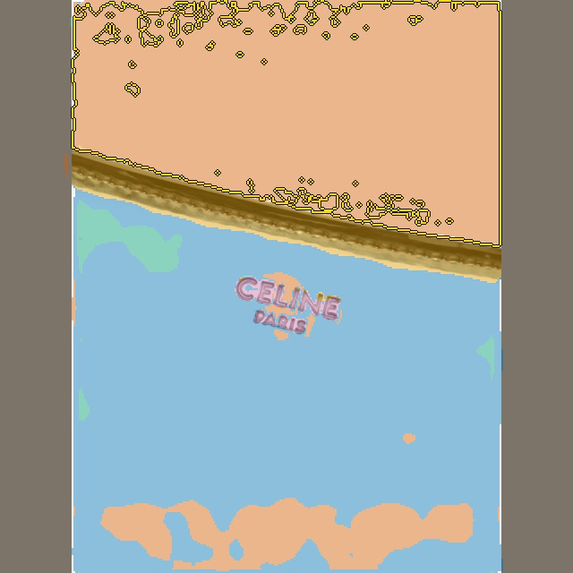
Mean clothing IoU change +0.351. Highlighted region: 0.242 → 0.943.


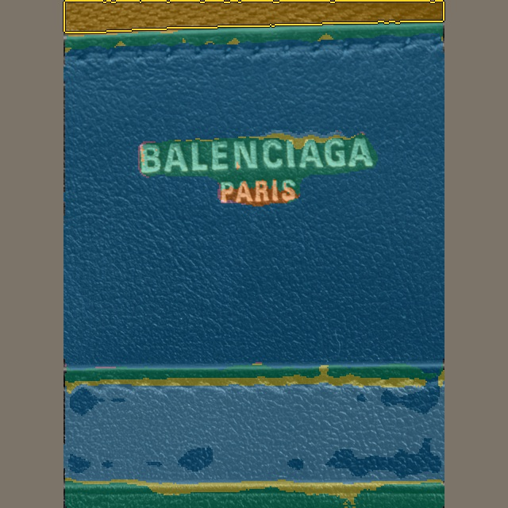
Mean clothing IoU change +0.345. Highlighted region: 0.397 → 0.742.


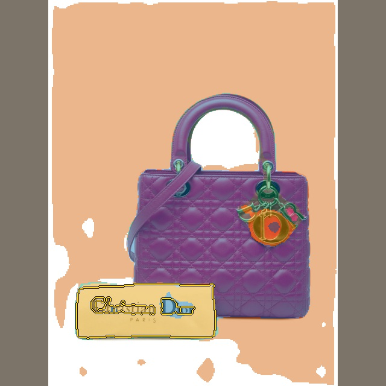
Mean clothing IoU change -0.330. Highlighted region: 0.676 → 0.007.
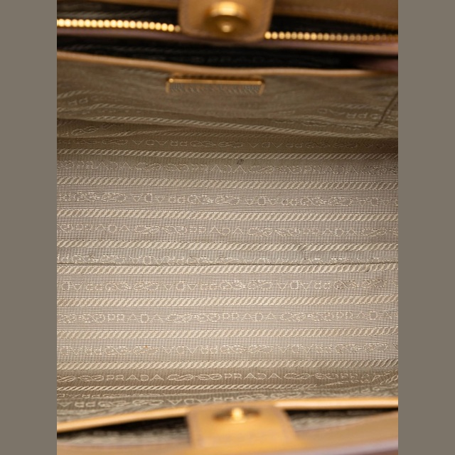
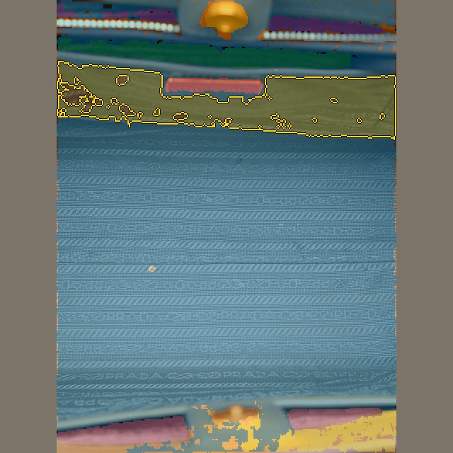

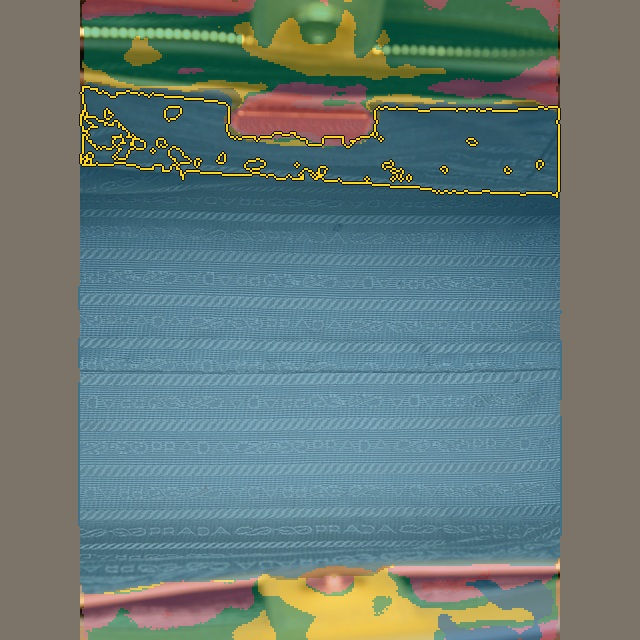
Mean clothing IoU change -0.222. Highlighted region: 0.222 → 0.000.

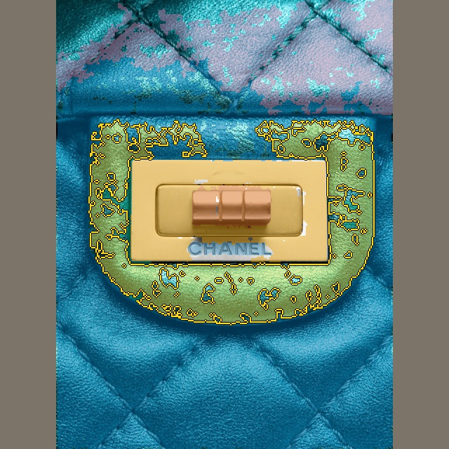
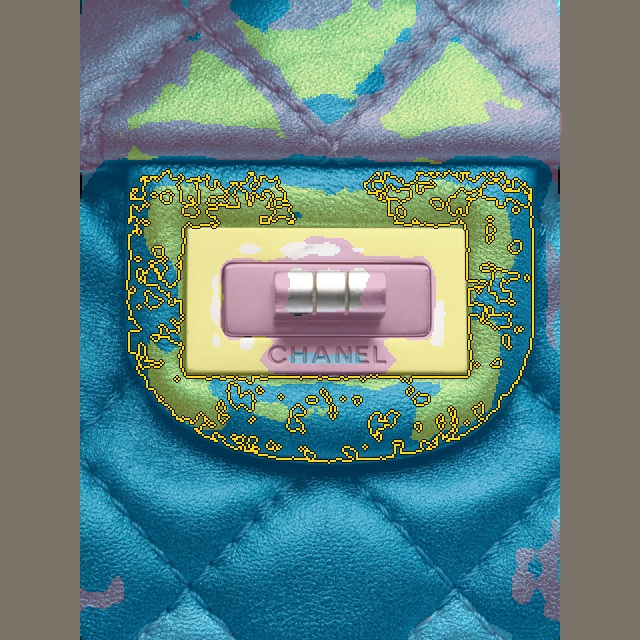
Mean clothing IoU change -0.207. Highlighted region: 0.539 → 0.331.
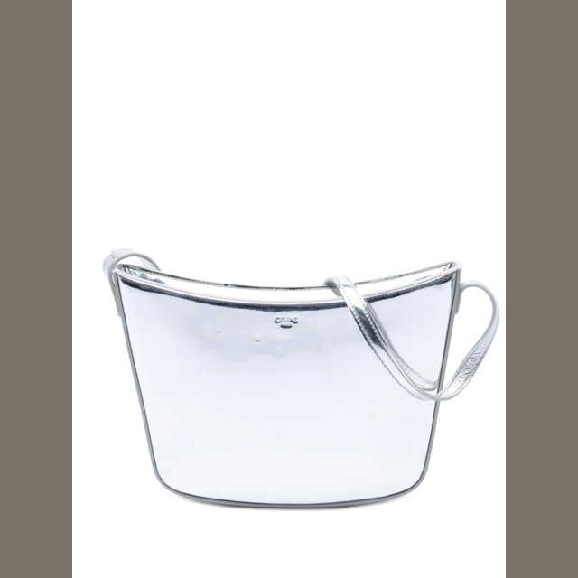
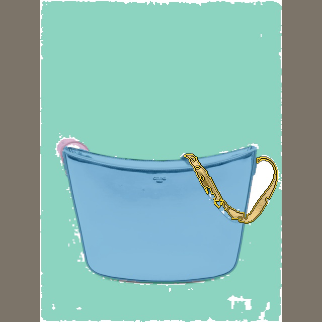
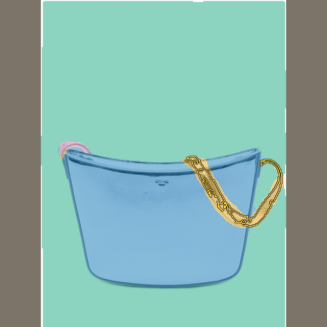
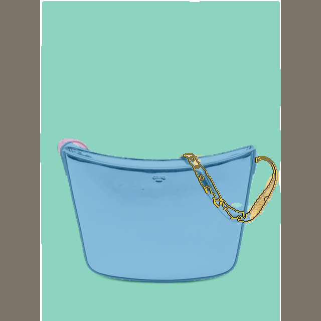
Accepted corrections are assigned in score order. Overlap is exclusive and previously predicted foreground cannot disappear. This guarantees partition bookkeeping, not correct garment boundaries. A confident bad correction can still fail, which is why the validation gates and all four hard cases are shown.
Teacher references changed to remove the faulty target composition. Scores here should be compared within this run, not directly against the earlier composite-target table.
TARGETS.json · AUX_TARGETS.json · CONTINUATION.json · AUX_CONCEPT_COUNTS.json · PARENT_FINAL.json · NAMED_PROPOSAL_DIAGNOSIS_COMPONENTS.json · GATE_PROBE.json · PRESENCE_GATE_PROBE.json · MASK_CONFIDENCE_PROBE.json · NAMED_REFERENCE.json · BASELINE.json · FINAL.json · BENCHMARK_FAST.json · BENCHMARK_FULL.json · AUDIT.json · validation_residual.json · deadline.json · CODE.json · LOCAL_STARTED.json